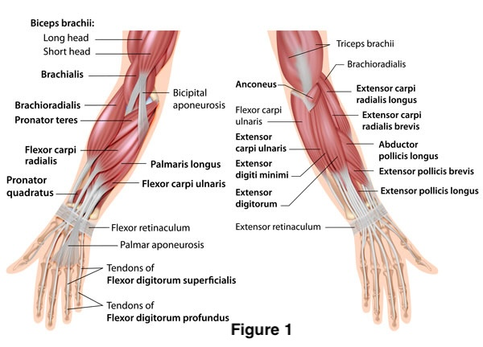
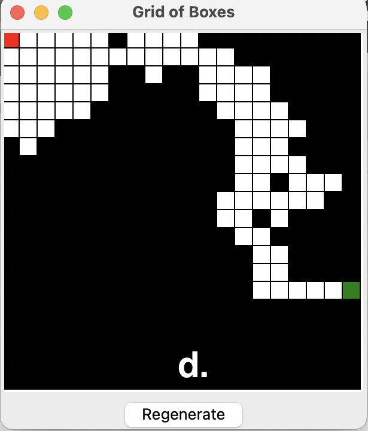
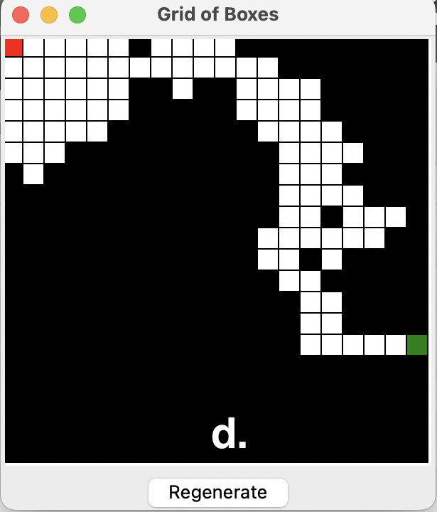

Paralysis Recovery Training
In this project, we designed a two-stage amplifier circuit (Figure c) to acquire and amplify signals. This configuration is beneficial because the high input impedance of the AD620 prevents signal loss and improves the signal-to-noise ratio (SNR). For detecting EMG signals, which serve as inputs for the circuit, the right arm’s lateral Brachioradialis muscle is targeted to sample signals associated with downward wrist movements. Signals for wrist movements to the left are sampled from the right arm’s inferior Extensor Carpi Ulnaris muscle. Upward wrist movements are sampled from the Flexor Carpi Ulnaris muscle of the left arm, and movements to the right are captured from the inferior Extensor Carpi Ulnaris muscle on the left arm. Electrode placement locations were determined experimentally. Each muscle site is equipped with two electrodes connected to the positive and negative inputs of the AD620, ensuring precise (reduced common-mode noise) and isolated (from one muscle) readings of the EMG activity. This setup allows for robust and accurate monitoring of muscle dynamics during varied wrist movements.
Figure 1). The Anatomy of the Forearm. Acquired from https://www.sportsinjuryclinic.net/anatomy/wrist-anatomy.
For data acquisition, analysis, and the interactive game, we used Python. The Python nidaqmx module was used to read the signal as arrays with 1000 points per second. The four input channels are stored in data[0] through data[3]. We analyze the wrist position every 500ms using the array segment obtained during that time period. Since the electrodes are placed where the signal is strongest for a specific wrist movement and minimal for others, we used peak-to-peak detection to classify the signal. Data[0] corresponds to the right wrist’s upward movement, data[1] to the right wrist’s rightward movement, data[2] to the left wrist’s leftward movement, and data[3] to the downward movement. We then compare the peak-to-peak (ptp) value (Figures a, b) with the threshold calibrated each time the electrodes are attached to classify the movement. The calibration process is conducted with an oscilloscope and a custom calibration script.
An interesting observation is that the order of classification affects accuracy. We found that during left and right movements, the electrodes recording up and down movements also show increased signals, but not vice versa. Therefore, left and right classifications are prioritized before up and down classifications.


Figure a). EMG Signal collected when the volunteer's wrist is at rest; Figure b). EMG Signal when the volunteer is moving his wrist.
An interactive maze game was built using the Pygame module and displayed with TkInter. The game begins with the initialization of a box with n x n black grids, each assigned a coordinate and stored in a two-dimensional array. An explorer grid moves probabilistically(25% in each direction when it's not on edges, if it's at either top or left edge, it has 33% chance of moving in only three direction) within the box, and its previous and current positions are stored in a list. When it reaches the bottom or right edge, the explorer box is deactivated, indicating that the game is ready to start. The red grid represents the starting position, and the green grid represents the destination. The player is only allowed to move within the white grids and the maze can be regenerate using the button at the bottom.
 

Figure c). Circuit Diagram; Figure d). A Sample Maze Generated by the Python Code using Pygame.